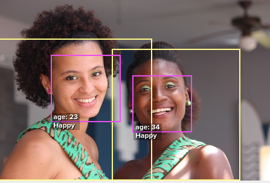

Neural Networks in Clojure with Cortex and Tensorboard
Kiran Karkera
Created: 2017-07-15 Sat 13:48
Why NNs in Clojure
A data science pipeline comprises of tasks such as
- Data Extraction (from databases/web crawls/other sources)
- Data Preprocessing and cleaning
- Model training and evaluation
- Productizing a trained model
Clojure (+Java) libraries are quite capable at all of the above, including (non-neural network) machine learning toolkits To use a NN toolkit in a different language (such as Python) requires clunky cross-language interactions.
Machine Learning digression
Supervised machine learning:
When you are a kid1 and you see different types of animals, your father tells you that this particular animal is a dog. After doing this a few times, you see a new type of dog that you never saw before - you identify it as a dog and not as a cat or a monkey or a potato.

Uses of Supervised learning
What can supervised learning be used for?
A competition to distinguish between cats and dogs was conducted in 2014. Training on 25,000 images of dogs and cats, the leading teams got to 98.9% accuracy.2

Classifying aspects of human faces such as gender, age, type of expression and skin colour

One of the earliest uses for supervised machine learning was reading the zip code in postal mail.3 We'll use this a starting example to try Cortex.

Figure 4: Handwritten digits
Neural Networks
Why are NNs popular?
- Many classifications algorithms exist (e.g. SVM, nearest neighbours, Random Forest)
- NNs offer state of the art performance in several classification tasks4.
- (0.21% error rate on MNIST, close to or better than human performance)
- Composable abstractions (different layers can be combined and computations are straightforward, thanks to the back propogation algorithm)
- Distributed learning is feasible.
Composability
- Composability extends to different domains
- (e.g the im2txt model, which takes an image as input and returns a text description as output).

Cortex
The Cortex library is a relatively recent library that implements Neural Networks in pure Clojure.
Features:
- Multiple backends (GPU and CPU)
- Supports popular network types (Feedforward/CNNs)
- Model serialization supported in multiple formats (edn/nippy)
- Fairly active (~900 commits/11 releases/24 contributors)
Why Tensorboard
(let [a 1000 b 20] (+ a b))